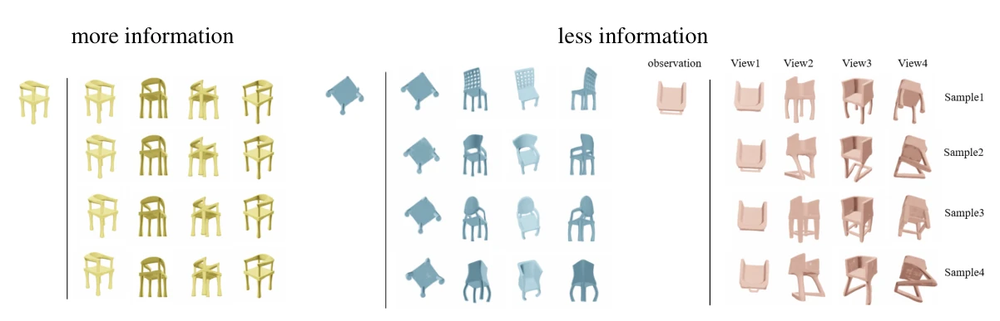
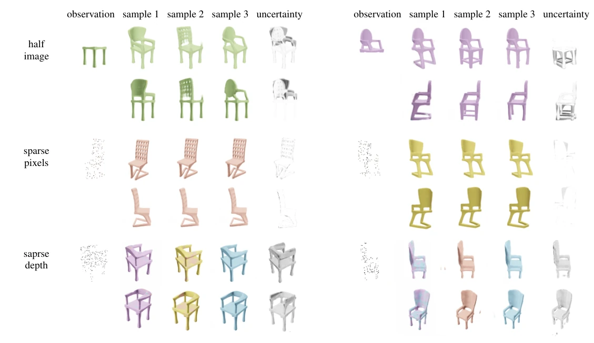

Predicting 3D Structure by Latent Posterior Sampling
What does the rest of a 3D object look like when you only see part of it? We combine a NeRF-based renderer with a diffusion prior over 3D scene latents to sample plausible reconstructions from partial observations.
One observation, multiple 3D scenes
Different chair shapes can agree with the same observed image. Each posterior sample is a complete 3D scene latent, so it can be rendered from new camera angles.

How latent posterior sampling works
- Learn 3D scene latents. Jointly optimize a shared neural renderer and a triplane latent for each training scene.
- Train a diffusion prior. Fit a denoising model to the learned scene latents.
- Sample given observations. Guide denoising with a likelihood gradient computed by comparing predictions from the frozen reconstruction model with the available measurements.

Reconstruction from different observations
The same learned prior supports half images, sparse RGB pixels, and sparse depth measurements by changing the likelihood at inference time. In the examples below, the hidden half of an image has higher uncertainty, while sparse depth constrains shape and leaves appearance uncertain.
